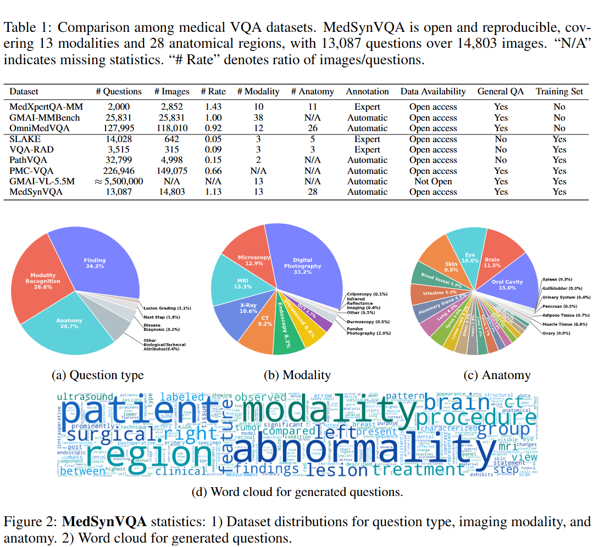
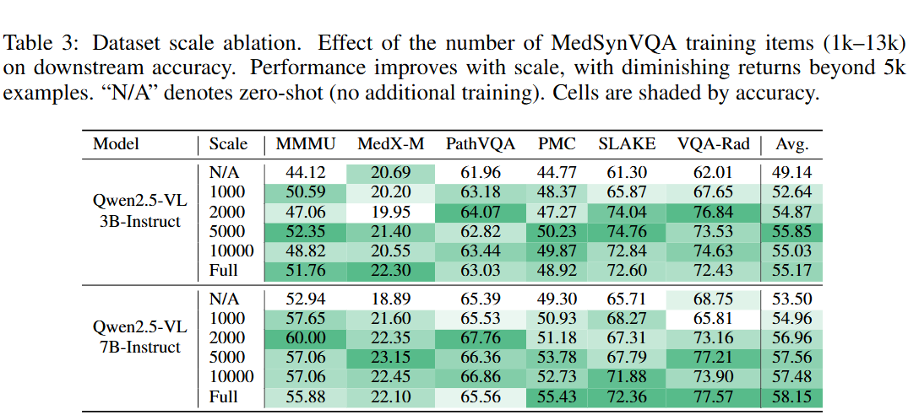
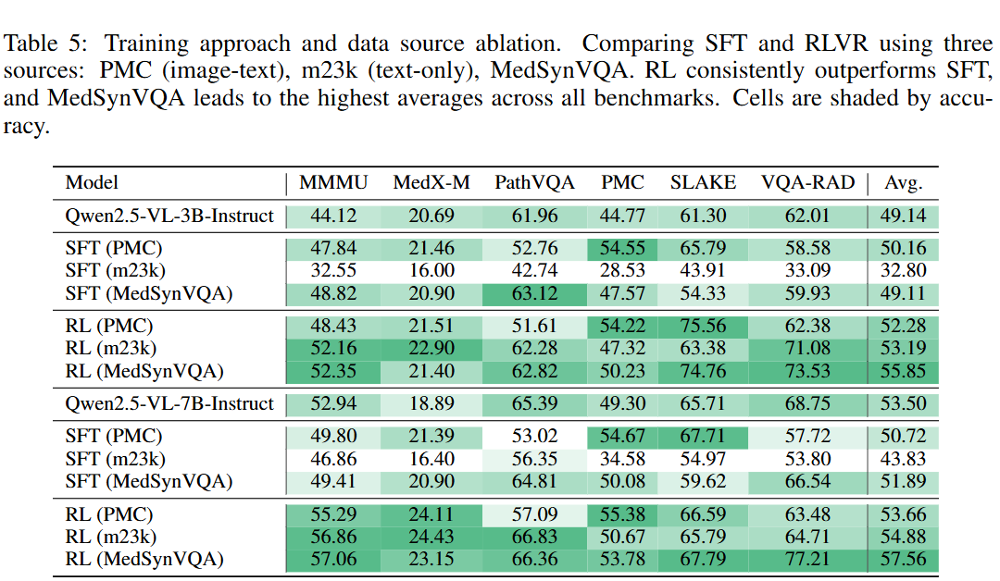
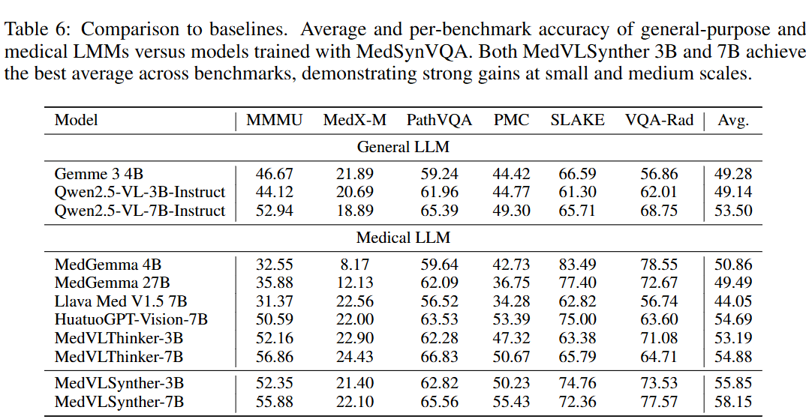

Synthesizing High-Quality Visual Question Answering from Medical Documents with Generator-Verifier LMMs
Large Multimodal Models (LMMs) are increasingly capable of answering medical questions that require joint reasoning over images and text, yet training general medical VQA systems is impeded by the lack of large, openly usable, high-quality corpora. We present MedVLSynther, a rubric-guided generator-verifier framework that synthesizes high-quality multiple-choice VQA items directly from open biomedical literature by conditioning on figures, captions, and in-text references. The generator produces self-contained stems and parallel, mutually exclusive options under a machine-checkable JSON schema; a multi-stage verifier enforces essential gates (self-containment, single correct answer, clinical validity, image-text consistency), awards fine-grained positive points, and penalizes common failure modes before acceptance. Applying this pipeline to PubMed Central yields MedVLSynther-13K: 13,087 audited questions over 14,803 images spanning 13 imaging modalities and 28 anatomical regions. Training open-weight LMMs with reinforcement learning using verifiable rewards improves accuracy across six medical VQA benchmarks, achieving averages of 55.85 (3B) and 57.56 (7B), with up to 77.21 on VQA-RAD and 66.36 on PathVQA, outperforming strong medical LMMs. Ablations verify that both generation and verification are necessary and that more verified data consistently helps, and a targeted contamination analysis detects no leakage from evaluation suites. By operating entirely on open literature and open-weight models, MedVLSynther offers an auditable, reproducible, and privacy-preserving path to scalable medical VQA training data.
The figure illustrates our data statistics and comparison with other datasets.
The figure illustrates our data curation pipeline. Click to enlarge.
Both MedVLSynther 3B and 7B achieve the best average across benchmarks, demonstrating strong gains at small and medium scales. We also did ablation experiments on data scale, choice of generator and verifier LMMs and training approach and data source. See the figure below.
  {kind=link}
{kind=link}